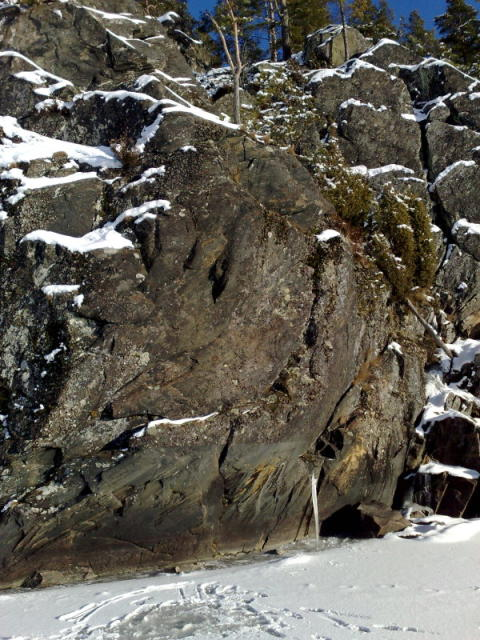
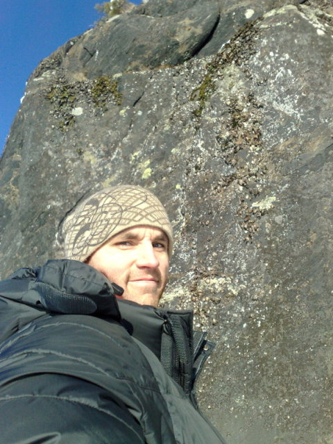

En oklättrad och obetydlig LITEN klippa på Glofsön i Vänern strax utanför Karlstad. På den nordliga sidan om ön finns en betongbrygga av lite större modell med okänt syfte. Denna brygga är förmodligen bästa stället om man vill lägga till med ett piratskepp. Mycket fin natur på ön.
Se karta. Ta dig till Alsters badplats som ligger på andra sidan viken. Ta en båt eller simma de hundratal metrarna till ön.
Glofsön ligger i Vänern, utanför Alster strandbad, mellan fastlandet och Jäverön. Ön har väl synliga klippor på västsidan av ön, kanske en två-tre meter höga. Klipporna ligger ofta längs med vattnet, och kan alltså klättras utan risk för farliga fall. Det finns en hel del vegetation här och var.
Tyvärr kan jag inte ge några fler beskrivningar, men kan ta det som ett projekt i sommar att stylta upp en mer beskrivande förare.
update 15/2 2009
Undersökte detta ställe i helgen. Det har varit kallt en period och isen låg tillräckligt tjock för en promenad över sundet.
Som de flesta klippor runt Karlstad så är stället tyvärr ganska mediokert. Tråkigt då det hade varit perfekt att simma över sundet från populära Alsters badplats på sommaren för en snabb session. Hade inte tid att gå runt hela ön, men tror inte den har mer att bjuda på än det lilla jag såg. Ett lätt överhängande parti över vatten kan kanske bjuda på något problem värt besväret. Jag vet dock inte hur landning ser ut eftersom isen var för tjock.
se bilder.
 Kategori:Bouldering
Kategori:DWS
Kategori:Värmland
Kategori:Saknar leder
Kategori:Saknar skiss
Copyright (C) Permission is granted to copy, distribute and/or modify this document under the terms of the GNU Free Documentation License, Version 1.3